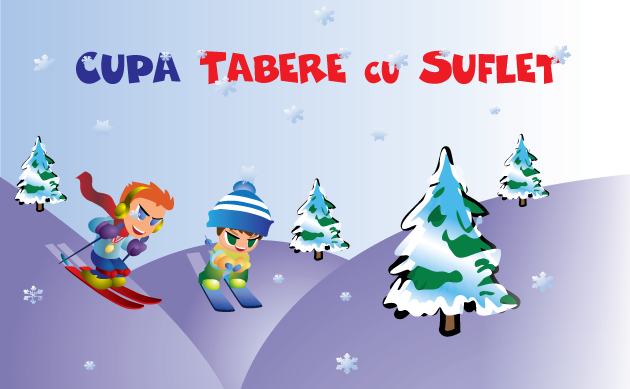
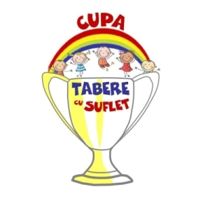

Asociatia Tabere cu Suflet, cu sprijinul TeamXpert Sports Events, organizeaza mai multe concursuri importante, recunoscute si apreciate la nivel national, la care iau startul, anual, mii de Copii si Adulti.
Cupa Tabere cu Suflet
Cea mai longeviva competitie este Cupa Tabere cu Suflet - o competitie multidisciplinara menita sa motiveze copiii sa practice sportul de performanta, ce aduna peste 50 de concursuri pentru Copii si Adulti, in tara si strainatate, la mai multe discipline sportive: Schi, Snowboard, Tenis, Tenis de masa, Ciclism, Alergare, Inot, Sarituri, Echitatie, Alpinism si Sah. Mai multe detalii
Antrenamente si Rezultate
Clubul Tabere cu Suflet organizeaza Antrenamente in vederea participarii la aceste concursuri, precum si la Campionatele Nationale sau la diferite Competitii Internationale. De-a lungul timpului, membrii Clubului au obtinut rezultate notabile la aceste competitii.
WeCare
Avand ca obiectiv promovarea unei Lume mai Buna, Asociatia Tabere cu Suflet, prin programul WeCare Sport pentru toti Copiii, ofera sprijin tuturor copiilor, indiferent de situatia materiala, pentru a putea participa la Cupa Tabere cu Suflet, precum si la diferite alte competitii.
De asemenea, Asociatia Tabere cu Suflet, impreuna cu TeamXpert Sports Events, au oferit de-a lungul timpului sprijin logistic si know how altor organizatori de evenimente sportive. Evenimente sustinute
In afara acestor evenimente, Clubul Tabere cu Suflet sprijna mai multi sportivi de top. Mai multe detalii

"Sportul nu înseamnă doar mişcare şi stil de viaţă sănătos. Sportul înseamnă Educaţie." - Gabriela Szabo, Campioana Olimpica JO 2000
"Pentru a atinge performanta, copiii au nevoie de intreceri organizate. Competiile sunt un instrument util pentru motivare, fara de care dezvoltarea lor nu poate fi desavarsita." - Camelia Savin
"Marii Campioni nu sunt cei cu multe Trofee in vitrina, ci cei care stiu sa piarda!" - Radu Savin